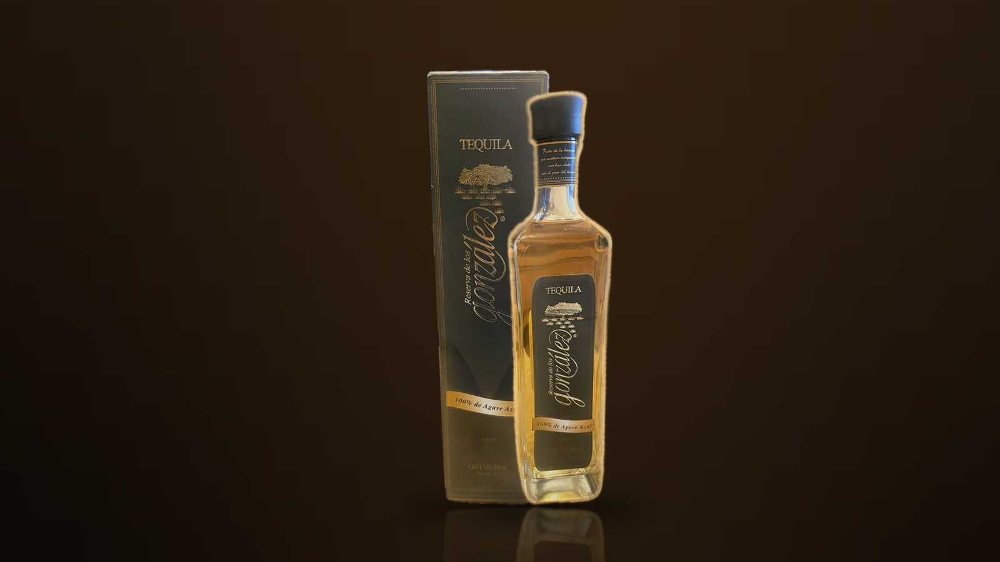

01 — HERENCIA
ドン・フリオの一族、新しい章へ
レセルバ・デ・ロス・ゴンサレスを設立したのは、ドン・フリオ・テキーラの創業者ドン・フリオ・ゴンサレスの息子、エドゥアルド・ゴンサレスとフランシスコ・ゴンサレス。一族はドン・フリオブランドを創業し、のちに売却しました。その歴史の先で、あらためて家名を冠したブランドとして伝統を継承しています。一族は、ハリスコ州ロス・アルトス（アトトニルコ地域）のアガベ畑とともに歩んできました。
お客様は20歳以上ですか？
このサイトはアルコール飲料を取り扱っています。
20歳未満の方はご覧いただけません。
申し訳ございません。20歳未満の方にはサイトをご案内できません。
100% DE AGAVE AZUL — NOM 1518, JALISCO
ドン・フリオを生んだ一族が、家名を懸けて造る、メキシコ国内限定のテキーラ。
ドン・フリオ・テキーラの創業者ドン・フリオ・ゴンサレスの息子、エドゥアルド・ゴンサレスとフランシスコ・ゴンサレスが設立した「レセルバ・デ・ロス・ゴンサレス」。一族はドン・フリオブランドの売却を経て、あらためて家名を冠したテキーラで伝統を受け継ぎます。ロス・アルトスの畑とともに歩んできた一族が、ハリスコ州アトトニルコで造る、現在メキシコ国内でのみ流通する一本です。

OUR STORY
レセルバ・デ・ロス・ゴンサレスを設立したのは、ドン・フリオ・テキーラの創業者ドン・フリオ・ゴンサレスの息子、エドゥアルド・ゴンサレスとフランシスコ・ゴンサレス。一族はドン・フリオブランドを創業し、のちに売却しました。その歴史の先で、あらためて家名を冠したブランドとして伝統を継承しています。一族は、ハリスコ州ロス・アルトス（アトトニルコ地域）のアガベ畑とともに歩んできました。
原料はハリスコ州の100%ブルーアガベ。石窯（レンガ窯）でじっくりと加熱し、ローラーミルで搾汁します。仕込みには深井戸から汲み上げた水を使い、銅コイルを備えたスチルで二度蒸留。工程のひとつひとつを丁寧に積み重ねる、実直な造りです。
蒸留を終えたテキーラは、オーク樽で熟成させます。テキーラの公的規格は、レポサドに2ヶ月以上、アネホに600L以下のオーク樽での1年以上、エクストラアネホに3年以上の熟成を定めています。クリスタリーノは熟成の後にろ過を施し、澄んだ液色に仕上げます。海外の愛好家の間では、加熱アガベやキャラメル、バタースコッチ、オーク、黒胡椒、蜂蜜、バニラを思わせる風味が語られています。
COLLECTION
※ 表示価格は参考価格です（輸入条件により変動）。

MEMBERS ONLY
公的規格で3年以上の樽熟成が定められたエクストラアネホをろ過して仕上げる「エクストラアネホ・クリスタリーノ」は、現在メキシコ国内でのみ流通しています。日本での取り扱い開始の際には、ご登録のお客様へ入荷情報をいち早くお届けします。
ご登録には20歳以上であることの確認が必要です。